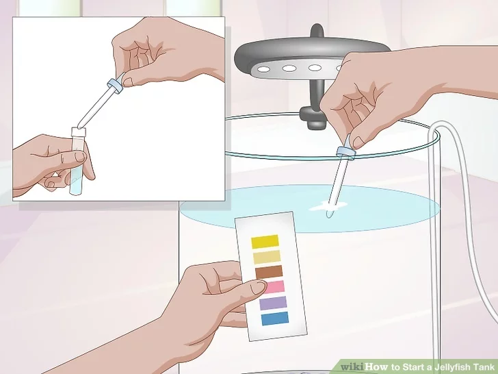

Selecting the tank
1. Look for a small to medium sized aquarium tank. You can house your jellyfish in an aquarium tank that is clean and sterile. You may decide to have only one to three small jellyfish in a small tank that you can fit on your desk at work or at home. Or, you may go for a medium sized aquarium tank that can fit a larger number of jellyfish. Look for a tank that is circular in shape or tall and narrow. A tank that is circular, with a flat base, is ideal as the shape can allow your jellyfish to float in the tank water. This is essential for the health and happiness of your jellyfish. 
2. Buy a jellyfish tank kit. The other option is to buy a tank kit that is made specifically to house jellyfish. These tanks come in a small size, which is usually circular in shape to house one to three small jellyfish. You can also get tall, narrow tanks for a larger number of jellyfish. You can purchase jellyfish tank kits online or at your local pet store. Keep in mind jellyfish tank kits are not cheap, ranging from $350 - $600. You may want to try using an aquarium tank instead to save money on your set up. in the tank water. This is essential for the health and happiness of your jellyfish.
 3. Get the other necessary supplies. Most jellyfish tank kits come with the supplies necessary for setting up the tank. If you are using a fish aquarium to house your jellyfish, you will need to purchase several other supplies, including:
An air pump, An undergravel filter plate, An air tube, Airline tubing, Substrate for the bottom of the tank, such as glass beads, An LED light, An LED remote control (optional).
3. Get the other necessary supplies. Most jellyfish tank kits come with the supplies necessary for setting up the tank. If you are using a fish aquarium to house your jellyfish, you will need to purchase several other supplies, including:
An air pump, An undergravel filter plate, An air tube, Airline tubing, Substrate for the bottom of the tank, such as glass beads, An LED light, An LED remote control (optional).

Setting up the tank
1. Find a flat, raised spot that does not get direct sunlight. Jellyfish do well in dark environments. Make sure you place the tank on a flat, raised spot in your home or office that does not get direct sunlight and is not near any heat sources or electrical equipment.A low table in your home in a dark spot or the top of a desk would work. You could also get a small raised wooden stand for your home or office and place the tank on top of that.
 2. Set up the filter plate and air tube. Connect the filter plates together and place the air tube in the center of the filter plates. Depending on which filter plates you buy, they
may come in several small parts or one to two larger parts. You want the air tube to be in the middle of the tank so it can circulate air throughout the tank.
You may need to trim off one side of one of the plates to make it fit with the rest of the plates. You can do this using scissors or an X-ACTO knife.Place the filter plate and the air tube in the tank. The plates should cover the bottom of the tank and fit snugly when you slide it into the tank.
2. Set up the filter plate and air tube. Connect the filter plates together and place the air tube in the center of the filter plates. Depending on which filter plates you buy, they
may come in several small parts or one to two larger parts. You want the air tube to be in the middle of the tank so it can circulate air throughout the tank.
You may need to trim off one side of one of the plates to make it fit with the rest of the plates. You can do this using scissors or an X-ACTO knife.Place the filter plate and the air tube in the tank. The plates should cover the bottom of the tank and fit snugly when you slide it into the tank.
 3 Put in the substrate. Substrate is going to help to hide the filter plates in the tank. You should use glass beads, rather than sand or gravel. Gravel can be a hazard for your jellyfish. Place the beads into the tank by hand so they do not break or nick the tank.
Look for glass beads at your local dollar store or online. Glass beads that are the size of jelly beans are ideal substrate for your tank. You should fill the tank with at least one layer of substrate, or 2 inches of glass beads for a medium sized tank.
4 Connect the air tube to the air pump. Once the substrate is in the tank, you can connect the air tube to the air pump. Do this by using the airline tubing.
3 Put in the substrate. Substrate is going to help to hide the filter plates in the tank. You should use glass beads, rather than sand or gravel. Gravel can be a hazard for your jellyfish. Place the beads into the tank by hand so they do not break or nick the tank.
Look for glass beads at your local dollar store or online. Glass beads that are the size of jelly beans are ideal substrate for your tank. You should fill the tank with at least one layer of substrate, or 2 inches of glass beads for a medium sized tank.
4 Connect the air tube to the air pump. Once the substrate is in the tank, you can connect the air tube to the air pump. Do this by using the airline tubing.

Adding Water and Cycling the Tank
1. Add salt water to the tank. Jellyfish are salt water animals so you will need to use salt water only in the tank. You can make your own salt water using marine salt or buy pre-mixed salt water at your local pet store. Do not use sea salt or salt for consumption![4] To make salt water for your tank, you can use aquarium salt or ionic salt. You should dissolve the salt crystals in reverse-osmosis filtered water or distilled water, making sure there are no big chunks of salt in the water. Do not use tap water as it contains elements that could be harmful for your jellyfish.Once you add the salt water, smooth over the glass beads with your hand so they are even at the bottom of the tank.
 2 Plug in the air pump and the LED light. Once you do this, you should let the tank run for at least 12 hours. During this time, the water should turn from cloudy to
clear.[5]
2 Plug in the air pump and the LED light. Once you do this, you should let the tank run for at least 12 hours. During this time, the water should turn from cloudy to
clear.[5]
 3. Test the ammonia, nitrite, and nitrate levels. You can get test kits for aquariums that will allow you to test the tank water for these elements. You should do this once
the tank water has cycled through and appears clear in the tank. The test should show a built up of ammonia, followed by a rise in nitrite as the ammonia level goes down. Nitrate
will then start to appear as the nitrite level falls.[6]
3. Test the ammonia, nitrite, and nitrate levels. You can get test kits for aquariums that will allow you to test the tank water for these elements. You should do this once
the tank water has cycled through and appears clear in the tank. The test should show a built up of ammonia, followed by a rise in nitrite as the ammonia level goes down. Nitrate
will then start to appear as the nitrite level falls.[6]